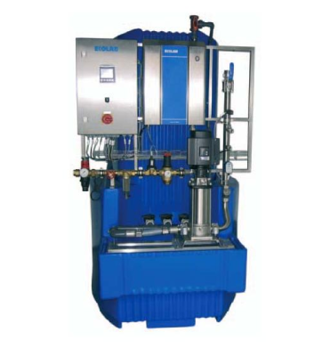
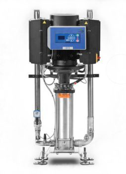
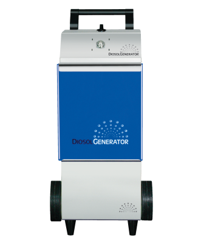

Technische Projekte
Energieeinsparung
Durch unsere ökologischen Unternehmensgrundsätze und eine Zertifizierung im Umweltmanagement streben wir stetig danach, Methoden zur Einsparung der wertvollen Ressourcen zu entwickeln, zu testen und zu verbessern. Neben der Einsparung von Strom ist der Verbrauch von Wasser bzw. das Produzieren von Abwasser ein wichtiges Thema in der Industrie- und Gebäudereinigung. Profis Industrie Service GmbH nutzt verschiedene Möglichkeiten, um für unsere Kunden Wasser und die damit verbundenen Kosten einzusparen. Neben kleinen Projekten wie Wasseruhren und Begrenzungsdüsen realisieren wir auch größere Projekte.
Inspexx
Besonders in der Fleischverarbeitenden Lebensmittelindustrie ist das Risiko der Kreuzkontamination durch die Schneidewerkzeuge stark erhöht und es müssen spezielle Vorgaben zur Sterilisation dieser Werkzeuge eingehalten werden. Inspexx ist eine zeitsparende und schonende Methode, die sogar mit kaltem Wasser ausgeführt werden kann. Weitere Vorteile dieser Methode sind unter Anderem:
- Keine Kosten zur Erhitzung des Wassers
- Schnell wirksam! 1 Sekunde
- Messer bleiben länger scharf
- Keine Bildung von Biofilmen
- Kein Koagulieren von Eiweiß


Doppelinjektor
Bei der herkömmlichen Reinigung fallen diverse Schritte an, die einzuhalten sind. Es beginnt bei der Vorreinigung mit Wasser, danach folgt die Reinigung mit Chemie. Nach der Einwirkzeit erfolgt die manuelle Reinigung und die optische Kontrolle durch das Personal. Abschließend wird die Desinfektion vorgenommen, welche ebenfalls eine gewisse Einwirkzeit benötigt. Um diesen Prozess zu verkürzen, nutzen wir einen sogenannten Doppelinjektor. Dieser ermöglicht es, den Vorgang der Reinigung und Desinfektion in einem Schritt durchzuführen, insofern der Verschmutzungsgrad der Oberflächen nicht zu stark ist. Die Verbindung der zwei Einzelschritte bringt ein großes Zeit- und Geldersparnis.
CIP-Diagnose
Eine CIP-Diagnose überwacht Ihr geschlossenes Reinigungssystem. Die einzelnen Reinigungsschritte werden digital aus der Ferne analysiert und die ablaufenden Programme wie z.B. das Vor- und Nachspülprogramm kontrolliert. Die Funktion der Ventile lässt sich genau so überprüfen, wie die Dosierung der Chemie. Alle gesammelten Daten werden gespeichert und lassen sich jeder Zeit abrufen. Dadurch erhalten Sie die Sicherheit, dass die Reinigungsabläufe abgeschlossen werden und Chemiereste für die nachfolgende Produktion vollständig entfernt wurden.

Moderne Luftreinigung
Die Reinigung der Raumluft ist schon längst nicht mehr nur Thema für Krankenhäuser und andere ärztliche Einrichtungen. Auch in der Industrie wird es immer wichtiger eine mikrobiologische Kontamination einzudämmen. Besonders die Lebensmittelindustrie profitiert von einer hygienisch sauberen Umgebungsluft und sollte eine Kontamination in jeder Weise vermeiden.
Durch einen Aktivkohlefilter mit Titanoxidbeschichtung wird die eingesaugte Luft effektiv und zügig von Verschmutzung befreit. Bei der Filterung wird nicht nur der Geruch aus der Luft genommen, sondern auch alle Schadstoffe. wie z.B. Formaldehyd. Mikroorganismen, die Allergien auslösen sind ebenso wenig ein Problem, wie Bakterien oder Viren. In Kombination mit UV Licht werden alle Chemikalien aus der Umgebungsluft im Gerät eliminiert und die Luftqualität um ein vielfaches erhöht.


Weitere Projekte
Unsere technischen Projekte sind immer darauf ausgelegt einen sichtbaren Nutzen für unseren Kunden zu schaffen. Ob monetär oder ökologisch, die Lösung soll dazu auch effiziente Resultate liefern. Gerne informieren wir in einem persönlichen Gespräch über weitere Möglichkeiten. Sprechen Sie uns an.